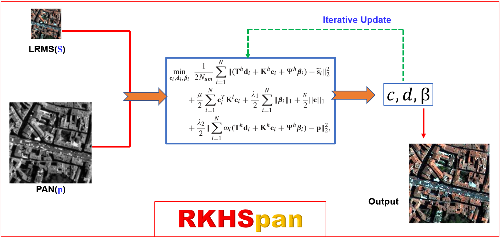

Liang-Jian Deng, Gemine Vivone, Weihong Guo, Mauro Dalla Mura, Jocelyn Chanussot
UESTC
Pansharpening is an important application in remote sensing image processing. It can increase the spatialresolution of a multispectral image by fusing it with a high spatial-resolution panchromatic image in the same scene, which brings great favor for subsequent processing such as recognition, detection, etc. In this paper, we propose a continuous modeling and sparse optimization based method for the fusion of a panchromatic image and a multispectral image. The proposed model is mainly based on reproducing kernel Hilbert space (RKHS) and approximated Heaviside function (AHF). In addition, we also propose a Toeplitz sparse term for representing the correlation of adjacent bands. The model is convex and solved by the alternating direction method of multipliers which guarantees the convergence of the proposed method. Extensive experiments on many real datasets collected by different sensors demonstrate the effectiveness of the proposed technique as compared with several state-of-the-art pansharpening approaches.

Bib Citation
@ARTICLE{rkhspan,
author={L. {Deng} and G. {Vivone} and W. {Guo} and M. {Dalla Mura} and J. {Chanussot}},
journal={IEEE Transactions on Image Processing},
title={A Variational Pansharpening Approach Based on Reproducible Kernel Hilbert Space and Heaviside Function},
year={2018},
volume={27},
number={9},
pages={4330-4344},
}